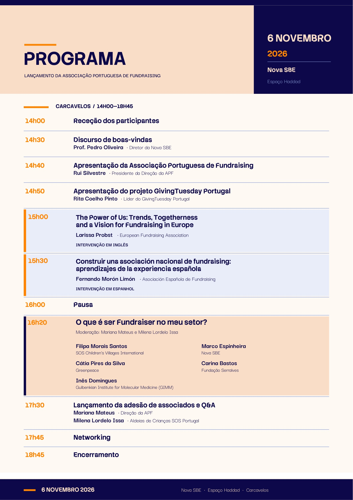

A Associação Portuguesa de Fundraising (APF) já divulgou o programa oficial do seu evento de lançamento, que terá lugar no próximo dia 6 de novembro de 2026, na Nova SBE, em Carcavelos. O encontro reunirá profissionais de diferentes setores, especialistas nacionais e convidados internacionais, numa tarde dedicada ao futuro do fundraising em Portugal.
O evento marca um momento importante para a Associação Portuguesa de Fundraising, que pretende contribuir para o reconhecimento, a valorização e a profissionalização da angariação de fundos em Portugal, promovendo a colaboração e a partilha de conhecimento entre profissionais e organizações.
Com início às 14h00, no Espaço Haddad da Nova SBE, a sessão contará com as boas-vindas do Professor Pedro Oliveira, Diretor da Nova SBE, seguindo-se a apresentação da APF por Rui Silvestre, Presidente da Direção, e do projeto GivingTuesday Portugal, por Rita Coelho Pinto, líder da iniciativa em Portugal.
Duas perspetivas internacionais sobre o futuro do fundraising
O programa inclui duas intervenções internacionais que irão proporcionar uma reflexão sobre as tendências europeias do fundraising e a importância do associativismo profissional.
Às 15h00, Larissa Probst, da European Fundraising Association (EFA), apresentará a intervenção “The Power of Us: Trends, Togetherness and a Vision for Fundraising in Europe”. A sessão, em inglês, abordará as tendências do setor e a importância da colaboração na construção de uma visão partilhada para o fundraising europeu.
Segue-se, às 15h30, Fernando Morón Limón, da Asociación Española de Fundraising (AEF), com a intervenção “Construir una asociación nacional de fundraising: aprendizajes de la experiencia española”. A partir da experiência espanhola, esta sessão, em espanhol, permitirá refletir sobre os desafios e as oportunidades associados ao desenvolvimento de uma associação nacional de fundraising.
O que é ser fundraiser em diferentes setores?
Às 16h20, terá início o painel “O que é ser Fundraiser no meu setor?”, moderado por Mariana Mateus e Milena Lordelo Issa.
A conversa reunirá cinco profissionais que desenvolvem a sua atividade em diferentes áreas:
- Filipa Morais Santos, SOS Children's Villages International;
- Marco Espinheira, Nova SBE;
- Cátia Pires da Silva, Greenpeace;
- Carina Bastos, Fundação Serralves;
- Inês Domingues, Gulbenkian Institute for Molecular Medicine (GIMM).
Através de diferentes experiências e perspetivas, o painel procurará explorar as particularidades do fundraising em cada setor, os desafios enfrentados pelos profissionais e as competências necessárias para mobilizar recursos e criar impacto.
Será também uma oportunidade para identificar pontos de convergência entre áreas de atuação distintas e refletir sobre a importância de uma comunidade profissional que promova a aprendizagem e a colaboração.
Um convite para fazer parte da APF
Às 17h30, a Associação apresentará oficialmente o seu sistema de adesão de associados, num momento conduzido por Mariana Mateus, membro da Direção da APF, e Milena Lordelo Issa, das Aldeias de Crianças SOS Portugal.
Esta sessão permitirá conhecer as possibilidades de envolvimento na Associação e esclarecer dúvidas sobre a adesão, através de um momento de perguntas e respostas.
O programa terminará com um espaço de networking, a partir das 17h45, proporcionando aos participantes a oportunidade de estabelecer contactos, partilhar experiências e criar novas ligações profissionais.
Junte-se a nós no dia 6 de novembro!
O lançamento da Associação Portuguesa de Fundraising pretende ser mais do que a apresentação oficial de uma associação: será uma oportunidade para reunir pessoas e organizações que partilham a ambição de fortalecer o fundraising em Portugal.
Data: 6 de novembro de 2026
Horário: 14h00 às 18h45
Local: Espaço Haddad, Nova SBE, Carcavelos
Consulte o programa completo e inscreva-se para fazer parte deste momento!
Inscreva-se no evento